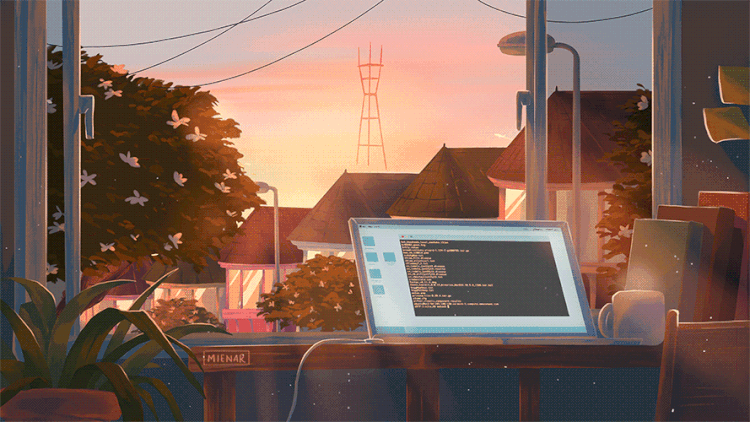

Moi c'est Narindra Ranjalahy, Fondateur & CEO de Pass'io, passionné d'informatique et entrepreneur. Ma détermination n'a d'égale que ma soif d'apprendre et de bâtir l'exceptionnel.
Explorer les limites du code, un projet à la fois.
Télécharger mon CVHybride : Fusion naturelle entre l'IA, le code et le design premium.
Résilient : Capacité à transformer chaque défi en innovation concrète.
Exigence : Une obsession du détail pour des solutions sans compromis.
01 / Profil
Multidisciplinaire
Conception d'architectures scalables et robustes. Du backend complexe aux interfaces réactives, je maîtrise l'intégralité de la chaîne de valeur numérique.
Intégration de modèles d'apprentissage automatique pour l'analyse prédictive et l'automatisation intelligente, comme illustré par le projet RAVINA.
Création d'identités visuelles puissantes et d'interfaces intuitives sous Figma. Un design qui ne se contente pas d'être beau, mais qui sert l'usage.
Capacité à prototyper et livrer des solutions fonctionnelles sous forte contrainte de temps (Hackathons).
Une approche analytique systématique pour transformer chaque obstacle technique en opportunité d'innovation.
02 / Études
de cas
Une trajectoire forgée par la création de solutions concrètes, de l'optimisation agricole à l'innovation bancaire.
Pass'io est une plateforme numérique innovante dédiée à l'écosystème musical et culturel. Streaming haute qualité, sorties événementielles, produits dérivés et expériences live pour moderniser la diffusion musicale et offrir aux artistes des leviers d'engagement direct avec leur public.
Conception et développement intégral d'un CRM métier pour un call center. Développement backend avec API REST, gestion de la base de données et création d'une interface utilisateur dynamique et réactive.
Architecture complète de RAVINA. Un écosystème mêlant IA et agronomie pour optimiser le rendement des cultures via des données prédictives.
Développement d'une solution numérique innovante sous contrainte de temps. Focus sur l'accessibilité et le prototypage rapide.
Modernisation des processus internes. Conception d'un programme de suivi de projets centralisé pour le département informatique.
Actuellement disponible pour de nouvelles collaborations et des projets ambitieux.